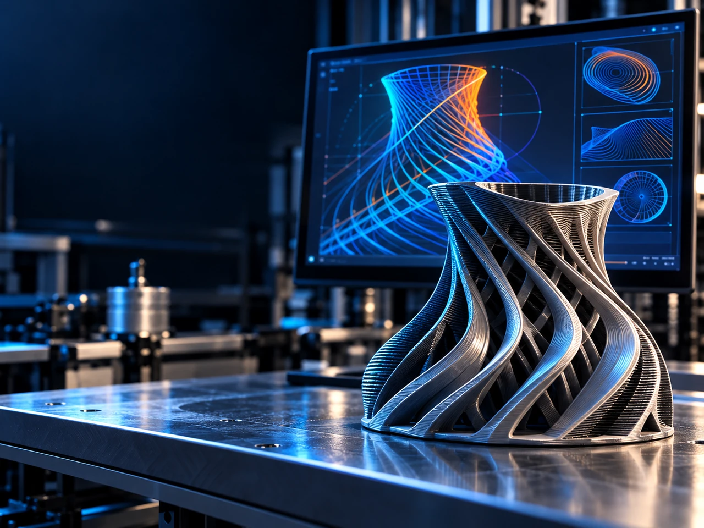

Parametrische Bahngenerierung
Wiederverwendbare Bahnformen aus expliziten Geometrie- und Prozessparametern erzeugen.
Fertigungsbewegungen aus der Prozessabsicht erzeugen, statt sich ausschließlich auf konventionelles planare Slicing zu stützen.
MYCNC3D entwickelt experimentelle Verfahren zur Erzeugung von Werkzeugbahnen und Maschinenbewegungen für unkonventionelle FDM-Prozesse, einschließlich variabler Auftragsgeometrie, nicht-planarer Bahnen und durchflussabhängiger Geschwindigkeitsregelung.

Projektüberblick
Mehrere Familien generierter Werkzeugbahnen wurden physisch gedruckt und bewertet. MYCNC3D entwickelt experimentelle Verfahren, um additive Fertigungsbahnen direkt aus geometrischen und prozessbezogenen Parametern abzuleiten.
Die Forschung umfasst parametrische Bahnerzeugung, variable Auftragsgeometrie, nicht-planare Trajektorien, Bahnreihenfolge, Bewegungsstetigkeit, maschinenspezifische Nachbearbeitung und durchflussabhängige Geschwindigkeitsregelung.
Eine geometrisch korrekte Bahn ist nicht automatisch eine zuverlässige Fertigungsbahn. Extrusionsbedarf, Beschleunigung, Kreuzungen, lokale Raupengeometrie, Kontinuität und Maschinenbedingungen müssen gemeinsam berücksichtigt werden. Der aktuelle Schwerpunkt ist, erfolgreiche geometriesspezifische Verfahren in wiederverwendbare und parametrisierte Komponenten zu überführen.
Warum dieses Thema wichtig ist
Durchsatz, Beschleunigung, lokale Raupengeometrie, Kreuzungen, Kontinuität und Maschinenkinematik entscheiden mit darüber, ob eine Bewegung zuverlässig ausführbar ist.
Die Bahngenerierung muss deshalb Geometrie mit den physikalischen Prozessgrenzen verbinden.
Aktueller Schwerpunkt
Wiederverwendbare Bahnformen aus expliziten Geometrie- und Prozessparametern erzeugen.
Breite, Höhe oder Form der Materialraupe lokal steuern.
Maschinengeschwindigkeit an lokalen Extrusionsbedarf und volumetrische Durchflussgrenzen anpassen.
Gekrümmte oder geneigte Bahnen jenseits planarer Schichtannahmen erzeugen.
Unnötige Verfahrwege, Kreuzungen und Unterbrechungen reduzieren.
Allgemeine Fertigungsabsicht in Befehle für Zielkinematik und Steuerung umsetzen.
Technischer Ansatz
Experimentelle Trajektorien werden erzeugt, geprüft und nach Möglichkeit physisch validiert. Das Druckergebnis fließt in die Weiterentwicklung geometrischer Regeln, Prozessparameter und der Bahnreihenfolge ein.
Aktueller Stand
Mehrere Familien generierter Werkzeugbahnen wurden physisch gedruckt und bewertet. Ziel ist es, erfolgreiche geometriesspezifische Methoden in wiederverwendbare Komponenten zur Trajektoriengenerierung zu überführen.
Nächster Meilenstein
Der nächste Meilenstein ist, die Bahngenerierung für Geometriefamilien zu verallgemeinern und Extrusionsfluss, Geschwindigkeit, Beschleunigung, Kontinuität, Kreuzungen und Maschinenbedingungen systematisch einzubeziehen.
IN ENTWICKLUNG ist erreicht, wenn sich dieselbe Generierungslogik parametrisieren und wiederverwenden lässt, ohne sie für jedes Testteil neu schreiben zu müssen.
Integrierte Plattform
Fortschrittliche Werkzeugbahn- und Bewegungsgenerierung wird gemeinsam mit den anderen Technologien der MYCNC3D-Plattform entwickelt.
Zusammenarbeit
MYCNC3D ist offen für die Zusammenarbeit mit Softwareentwicklern, CAM-Fachleuten, Forschenden und Maschinenherstellern, die an fortschrittlichen additiven Werkzeugbahnen oder maschinenbewusster Fertigungssoftware arbeiten.